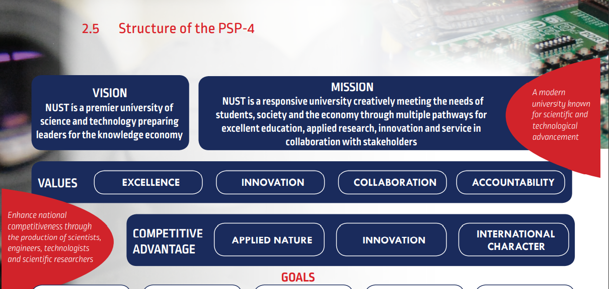

<section class=" quiz">
  <mat-horizontal-stepper class="container" labelPosition="bottom" linear #stepper>

    <mat-step [editable]="false">
        <div class="col-md-4">
            <ng-template matStepLabel></ng-template>
            <label>Which of these is NUST Strategic Direction?</label><br>
            <button type="button" class="btn btn-primary" (click)="clicked(0)" *ngIf="!isClicked()">Internationally benchmarked and accredited qualifications</button><button type="button" class="btn btn-danger" *ngIf="isClicked()">Internationally benchmarked and accredited qualifications</button><br><br>
            <button type="button" class="btn btn-primary" (click)="clicked(0)" *ngIf="!isClicked()">Opportunities for international engagement, particularly for exchanges and research partnerships.</button><button type="button" class="btn btn-danger" *ngIf="isClicked()">Opportunities for international engagement, particularly for exchanges and research partnerships.</button><br><br>
            <button type="button" class="btn btn-primary" (click)="clicked(0.5)" *ngIf="!isClicked()">Excellence in Teaching, Research & Service</button><button type="button" class="btn btn-success" *ngIf="isClicked()">Excellence in Teaching, Research & Service</button><br><br>
            <button type="button" class="btn btn-primary" (click)="clicked(0)" *ngIf="!isClicked()">Transforming the mandate of an institution from that of a polytechnic to that of a university of science and technology.</button><button type="button" class="btn btn-danger" *ngIf="isClicked()">Transforming the mandate of an institution from that of a polytechnic to that of a university of science and technology.</button><br><br>

            <button mat-stroked-button matStepperNext [disabled]="!isClicked()" (click)="cleanClick()" class="btn-block">Next</button><br>
        </div>

        <div class="col-md-8" style="float: right !important; margin-top: -40%;">
          <mat-card *ngIf="!isClicked()">
            
        </mat-card>
            <mat-card *ngIf="isClicked()">
                <mat-card-content>
                  
                </mat-card-content>
            </mat-card>
        </div>
    </mat-step>

    <mat-step [editable]="false">
        <div class="col-md-4">
            <ng-template matStepLabel></ng-template>
            <label>When did NUST change its name from Polytechnic? </label><br>
            <button type="button" class="btn btn-primary" (click)="clicked(0.5)" *ngIf="!isClicked()">2015</button><button type="button" class="btn btn-success" *ngIf="isClicked()">2015</button><br><br>
            <button type="button" class="btn btn-primary" (click)="clicked(0)" *ngIf="!isClicked()">2011</button><button type="button" class="btn btn-danger" *ngIf="isClicked()">2011</button><br><br>
            <button type="button" class="btn btn-primary" (click)="clicked(0)" *ngIf="!isClicked()">2013</button><button type="button" class="btn btn-danger" *ngIf="isClicked()">2013</button><br><br>
            <button type="button" class="btn btn-primary" (click)="clicked(0)" *ngIf="!isClicked()">2017</button><button type="button" class="btn btn-danger" *ngIf="isClicked()">2017</button><br><br>

            <button mat-stroked-button matStepperNext [disabled]="!isClicked()" (click)="cleanClick()" class="btn-block">Next</button><br>
        </div>

        <div class="col-md-8" style="float: right !important; margin-top: -30%;">
          <mat-card *ngIf="!isClicked()">
            
        </mat-card>
            <mat-card *ngIf="isClicked()">
                <mat-card-content>
                    <p>In October 2007, the Council of the Polytechnic
                      submitted a concept paper for the renaming of the
                      institution to the Minister of Education. This was
                      followed by a formal application in November 2008.
                      The Minister in turn, through the NCHE, appointed
                      a team of consultants to advise on the application.
                      The consultants found that the Polytechnic indeed
                      satisfied the requirements normally associated
                      with and expected from universities of science
                      and technology, and recommended the renaming
                      of the institution. However, prior to submitting the
                      application and report to Cabinet for discussion
                      and approval, a new Minister of Education was
                      appointed in March 2010.</p>
                      <p>The new Minister delayed the submission of
                        the application to Cabinet while analysing the
                        higher education sector. As part of his analysis,
                        the Minister commissioned a comprehensive
                        review of the higher education landscape.</p>
                        <p>In 2015, Cabinet approved the renaming of the
                          Polytechnic to NUST, Act No. 7 of 2015.
                          </p>
                </mat-card-content>
            </mat-card>
        </div>
    </mat-step>

    <mat-step [editable]="false">
        <div class="col-md-4">
            <ng-template matStepLabel></ng-template>
            <label>Which of these is one of NUST aims?</label><br>
            <button type="button" class="btn btn-primary" (click)="clicked(0)" *ngIf="!isClicked()">To create graduates every year</button><button type="button" class="btn btn-danger" *ngIf="isClicked()">To create graduates every year</button><br><br>
            <button type="button" class="btn btn-primary" (click)="clicked(0)" *ngIf="!isClicked()">To make education cheaper for everyone</button><button type="button" class="btn btn-danger" *ngIf="isClicked()">To make education cheaper for everyone</button><br><br>
            <button type="button" class="btn btn-primary" (click)="clicked(0)" *ngIf="!isClicked()">To be a political ground for many reasons</button><button type="button" class="btn btn-danger" *ngIf="isClicked()">To be a political ground for many reasons</button><br><br>
            <button type="button" class="btn btn-primary" (click)="clicked(1)" *ngIf="!isClicked()">To drive, promote and facilitate innovation, technology development and transfer</button><button type="button" class="btn btn-success"
                *ngIf="isClicked()">To drive, promote and facilitate innovation, technology development and transfer</button><br><br>

            <button mat-stroked-button matStepperNext [disabled]="!isClicked()" (click)="cleanClick()" class="btn-block">Next</button><br>
        </div>

        <div class="col-md-8" style="float: right !important; margin-top: -40%;">
          <mat-card *ngIf="!isClicked()">
            
        </mat-card>
            <mat-card *ngIf="isClicked()">
                <mat-card-content>
                    <p>Nust Aims include: </p>
                    <ul>
                        <li>to contribute to knowledge creation
                          and advancement through research and
                          scientific investigation, with an emphasis
                          on applied, multi-disciplinary and interdisciplinary research;</li>
                        <li>to contribute to economic and social
                          development through globally relevant,
                          professional, technical and career
                          preparatory higher education, and
                          effective community engagement;</li>
                        <li>to drive, promote and facilitate innovation,
                          technology development and transfer;</li>
                        <li>to create equal opportunities for
                          admissions to academic programmes, and
                          employment at the institution;</li>
                        <li>to provide an effective governance
                          structure encouraging the active
                          participation and collective input of all
                          interested parties;</li>
                        <li>to engage in national and international
                          partnerships, and cooperation with other
                          universities, organisations and institutions;
                          and</li>
                          <li>to preserve and promote the traditional
                            and constitutional principles of higher
                            education institutional autonomy and
                            academic freedom in the conduct of its
                            internal and external affairs.</li>
                    </ul>
                </mat-card-content>
            </mat-card>
        </div>
    </mat-step>

    <mat-step [editable]="false">
        <div class="col-md-4">
            <ng-template matStepLabel></ng-template>
            <label>Which 2 qualifications NUST doesn't offer anymore?</label><br>
            <button type="button" class="btn btn-primary" (click)="clicked(0)"
                *ngIf="!isClicked()">Proffesional Bachelor & Certificate</button><button type="button" class="btn btn-danger"
                *ngIf="isClicked()">Proffesional Bachelor & Certificate</button><br><br>
            <button type="button" class="btn btn-primary" (click)="clicked(0)"
                *ngIf="!isClicked()">Postgraduate Certificate & Diploma</button><button type="button" class="btn btn-danger"
                *ngIf="isClicked()">Postgraduate Certificate & Diploma</button><br><br>
            <button type="button" class="btn btn-primary" (click)="clicked(0)"
                *ngIf="!isClicked()">Diploma & Doctrate</button><button type="button" class="btn btn-danger"
                *ngIf="isClicked()">Diploma & Doctrate</button><br><br>
            <button type="button" class="btn btn-primary" (click)="clicked(1.5)"
                *ngIf="!isClicked()">Certificate & Diploma</button><button type="button" class="btn btn-success"
                *ngIf="isClicked()">Certificate & Diploma</button><br><br>

            <button mat-stroked-button matStepperNext [disabled]="!isClicked()" (click)="cleanClick()" class="btn-block">Next</button><br>
        </div>

        <div class="col-md-8" style="float: right !important; margin-top: -40%;">
          <mat-card *ngIf="!isClicked()">
            
        </mat-card>
            <mat-card *ngIf="isClicked()" >
                <mat-card-content>
                  
                    <p>The table above gives an indication of the distribution of qualifications at PON versus the distribution of
                      qualifications at NUST in 2018.
                      </p>
                </mat-card-content>
            </mat-card>
        </div>
    </mat-step>

    <mat-step [editable]="false">
        <div class="col-md-4">
            <ng-template matStepLabel></ng-template>
            <label>A core function and key characteristic of a university of science and technology...</label><br>
            <button type="button" class="btn btn-primary" (click)="clicked(0)" *ngIf="!isClicked()">Enrolments will only increase where new programmes, in line with the national developmental priorities, are implemented.</button><button type="button" class="btn btn-danger" *ngIf="isClicked()">Enrolments will only increase where new programmes, in line with the national developmental priorities, are implemented.</button><br><br>
            <button type="button" class="btn btn-primary" (click)="clicked(0)" *ngIf="!isClicked()">strengthening its already existing learning support systems during the study period of students.</button><button type="button" class="btn btn-danger" *ngIf="isClicked()">strengthening its already existing learning support systems during the study period of students.</button><br><br>
            <button type="button" class="btn btn-primary" (click)="clicked(0)" *ngIf="!isClicked()">will actively pursue a more diverse student body.</button><button type="button" class="btn btn-danger" *ngIf="isClicked()">will actively pursue a more diverse student body.</button><br><br>
            <button type="button" class="btn btn-primary" (click)="clicked(1.5)" *ngIf="!isClicked()">relates to its contribution to knowledge creation and advancement</button><button type="button" class="btn btn-success" *ngIf="isClicked()">relates to its contribution to knowledge creation and advancement</button><br><br>

            <button mat-stroked-button matStepperNext [disabled]="!isClicked()" (click)="cleanClick()" class="btn-block">Next</button><br>
        </div>

        <div class="col-md-8" style="float: right !important; margin-top: -40%;">
          <mat-card *ngIf="!isClicked()">
            
        </mat-card>
            <mat-card *ngIf="isClicked()">
                <mat-card-content>
                    <p>A core function and key characteristic of a
                      university of science and technology relates
                      to its contribution to knowledge creation and
                      advancement. The 2013/14 GCI ranks Namibia at the
                      94th place on the innovation pillar. An improved
                      rating demands the creation of an innovative and
                      entrepreneurial environment, the stimulation of
                      a variety of forms of applied research, and the
                      fostering of close collaboration with industry,
                      the community and the government to facilitate
                      successful transfer of knowledge outputs, and
                      technology in particular.
                      NUST will therefore conduct mainly applied
                      research with so-called blue sky research having
                      a relatively minor emphasis. This focus will ensure
                      continued collaboration with industry as well as an
                      emphasis on solving existing problems, creating
                      new and improving on existing products, services
                      and technologies. </p>
                </mat-card-content>
            </mat-card>
        </div>
    </mat-step>

    <mat-step [editable]="false">
        <div class="col-md-4">
            <ng-template matStepLabel></ng-template>
            <label>NUST will focus on building research in the following broad fields:</label><br>
            <button type="button" class="btn btn-primary" (click)="clicked(0)"
                *ngIf="!isClicked()">Energy, Education, Sustainability, Technology</button><button type="button" class="btn btn-danger"
                *ngIf="isClicked()">Energy, Education, Sustainability, Technology</button><br><br>
            <button type="button" class="btn btn-primary" (click)="clicked(1)"
                *ngIf="!isClicked()">Energy, Sustainability, Indigenous Knowledge, Technology</button><button type="button" class="btn btn-success"
                *ngIf="isClicked()">Energy, Sustainability, Indigenous Knowledge, Technology</button><br><br>
            <button type="button" class="btn btn-primary" (click)="clicked(0)"
                *ngIf="!isClicked()">Creative Arts, Sustainability, Humanities, Technology</button><button type="button" class="btn btn-danger"
                *ngIf="isClicked()">Creative Arts, Sustainability, Humanities, Technology</button><br><br>
            <button type="button" class="btn btn-primary" (click)="clicked(0)"
                *ngIf="!isClicked()">Creative Arts, Education, Human Society, Technology</button><button type="button" class="btn btn-danger"
                *ngIf="isClicked()">Creative Arts, Education, Human Society, Technology</button><br><br>

            <button mat-stroked-button matStepperNext [disabled]="!isClicked()" (click)="cleanClick()" class="btn-block">Next</button><br>
        </div>

        <div class="col-md-8" style="float: right !important; margin-top: -40%;">
          <mat-card *ngIf="!isClicked()">
            
        </mat-card>
            <mat-card *ngIf="isClicked()">
                <mat-card-content>
                    <p>NUST will focus on building research in the
                      following broad fields: <br>
                      <li>Energy</li>
                      <li>Sustainability</li>
                      <li>Indigenous Knowledge</li>
                      <li>Technology</li>
                      It is envisaged that developments in these research
                      areas will be supported by the offering of master’s
                      and doctoral research-based qualifications. A
                      number of master’s and doctor’s degrees need
                      to be planned for implementation, to address
                      the concerns raised by the 2012 Higher Education
                      Review Report that the number of students
                      enrolled in post-graduate studies in Namibia is
                      too low to support a sustained movement of the
                      country towards a knowledge-based economy.
                      Significant opportunities exist for NUST to
                      participate in international research clusters, to
                      take advantage of global expertise and to develop
                      a strong international institutional profile. </p>
                </mat-card-content>
            </mat-card>
        </div>
    </mat-step>

    <mat-step [editable]="false">
        <div class="col-md-4">
            <ng-template matStepLabel></ng-template>
            <label>Whats the requirement for senior lecturer level upwards?</label><br>
            <button type="button" class="btn btn-primary" (click)="clicked(0)"
                *ngIf="!isClicked()">Bachelors degrees</button><button type="button" class="btn btn-danger"
                *ngIf="isClicked()">Bachelors degrees</button><br><br>
            <button type="button" class="btn btn-primary" (click)="clicked(0)"
                *ngIf="!isClicked()">Honors degrees</button><button type="button" class="btn btn-danger"
                *ngIf="isClicked()">Honors degrees</button><br><br>
            <button type="button" class="btn btn-primary" (click)="clicked(1)"
                *ngIf="!isClicked()">Doctoral degrees</button><button type="button" class="btn btn-success"
                *ngIf="isClicked()">Doctoral degrees</button><br><br>
            <button type="button" class="btn btn-primary" (click)="clicked(0)"
                *ngIf="!isClicked()">Diploma</button><button type="button" class="btn btn-danger"
                *ngIf="isClicked()">Diploma</button><br><br>

            <button mat-stroked-button matStepperNext [disabled]="!isClicked()" (click)="cleanClick()" class="btn-block">Next</button><br>
        </div>

        <div class="col-md-8" style="float: right !important; margin-top: -40%;">
          <mat-card *ngIf="!isClicked()">
            
        </mat-card>
            <mat-card *ngIf="isClicked()">
                <mat-card-content>
                    <p>In addition, from 2014 onwards doctoral degrees
                      will become a requirement for appointment from
                      senior lecturer level upwards. For appointment
                      to senior academic positions, the requirement of
                      demonstrating a proven research record will be
                      introduced in phases.
                      <br>
                      The graph below indicates the qualification levels
                      of existing academic staff as well as projected levels
                      by 2018. Since obtaining a doctoral qualification
                      normally takes at least three to four years, an
                      achievement plan for doctoral qualifications will
                      be established by the institution immediately</p>
                      
                </mat-card-content>
            </mat-card>
        </div>
    </mat-step>

    <mat-step [editable]="false">
        <div class="col-md-4">
            <ng-template matStepLabel></ng-template>
            <label>The NUST planning model consists of;</label><br>
            <button type="button" class="btn btn-primary" (click)="clicked(1)"
                *ngIf="!isClicked()">1. Polytechnic Planning Committee <br>2. Thematic Cross-Functional Work Groups<br>3. Faculties, Departments, Unit, Centres, Institutes</button><button type="button" class="btn btn-success"
                *ngIf="isClicked()">1. Polytechnic Planning Committee <br>2. Thematic Cross-Functional Work Groups<br>3. Faculties, Departments, Unit, Centres, Institutes</button><br><br>
            <button type="button" class="btn btn-primary" (click)="clicked(0)"
                *ngIf="!isClicked()">1. Polytechnic Planning Committee <br>2. Government<br>3. Council</button><button type="button" class="btn btn-danger"
                *ngIf="isClicked()">1. Polytechnic Planning Committee <br>2. Government<br>3. Council</button><br><br>
            <button type="button" class="btn btn-primary" (click)="clicked(0)" *ngIf="!isClicked()">1. Vice Chancelor <br>2. Registrar <br>3. Faculty Deans</button><button type="button" class="btn btn-danger" *ngIf="isClicked()">1. Vice Chancelor <br>2. Registrar <br>3. Faculty Deans</button><br><br>
            <button type="button" class="btn btn-primary" (click)="clicked(0)"
                *ngIf="!isClicked()">1. Vice Chancelor <br>2. Faculty Deans <br>3. SRC students board</button><button type="button" class="btn btn-danger"
                *ngIf="isClicked()">1. Vice Chancelor <br>2. Faculty Deans <br>3. SRC students board</button><br><br>

            <button mat-stroked-button matStepperNext [disabled]="!isClicked()" (click)="cleanClick()" class="btn-block">Next</button><br>
        </div>

        <div class="col-md-8" style="float: right !important; margin-top: -30%;">
          <mat-card *ngIf="!isClicked()">
            
        </mat-card>
            <mat-card *ngIf="isClicked()">
                <mat-card-content>
                  
                    <p>
                      The Planning model consists of the following tiers:<br>
  • At the first tier, the NUST Planning
  Committee is responsible for the overall
  alignment of institutional strategic and
  national goals.<br>
  • At the second tier, five thematic crossfunctional workgroups (TCFWs) were
  appointed by the Rector to analyse and
  strategically address the priority areas
  identified by staff as being critical for the
  sustainability of the institution during the
  next five years. The TCFWs were each given
  one of the following areas to address:
  2. The Strategic Planning Process<br>
  a) Teaching, Learning and Research;<br>
  b) Student-Centredness;<br>
  c) Governance and Management;<br>
  d) Stakeholder Relations and<br>
  Partnerships; and<br>
  e) Institutional Sustainability.<br>
  • At the third tier, faculties, departments,
  centres and units analysed their respective
  contexts, considered trends in higher
  education and developed departmental or
  centre/unit plans and outputs to address
  the themes and ultimately the institutional
  goals formulated.
                    </p>
                </mat-card-content>
            </mat-card>
        </div>
    </mat-step>

    <mat-step [editable]="false">
        <div class="col-md-4">
            <ng-template matStepLabel></ng-template>
            <label>In each faculty, the dean is responsible for...</label><br>
            <button type="button" class="btn btn-primary" (click)="clicked(0)" *ngIf="!isClicked()">Conducting classes & Institutional planning</button><button type="button" class="btn btn-danger" *ngIf="isClicked()">Conducting classes & Institutional planning</button><br><br>
            <button type="button" class="btn btn-primary" (click)="clicked(0)" *ngIf="!isClicked()">strategically address the priority areas identified by staff as being critical</button><button type="button" class="btn btn-danger" *ngIf="isClicked()">strategically address the priority areas identified by staff as being critical</button><br><br>
            <button type="button" class="btn btn-primary" (click)="clicked(0)" *ngIf="!isClicked()">the overall alignment of institutional strategic and national goals.</button><button type="button" class="btn btn-danger" *ngIf="isClicked()">the overall alignment of institutional strategic and national goals.</button><br><br>
            <button type="button" class="btn btn-primary" (click)="clicked(1)" *ngIf="!isClicked()">the development, implementation and evaluation of the Faculty Plan</button><button type="button" class="btn btn-success"
                *ngIf="isClicked()">the development, implementation and evaluation of the Faculty Plan</button><br><br>

            <button mat-stroked-button matStepperNext [disabled]="!isClicked()" (click)="cleanClick()" class="btn-block">Next</button><br>
        </div>

        <div class="col-md-8" style="float: right !important; margin-top: -40%;">
          <mat-card *ngIf="!isClicked()">
            
        </mat-card>
            <mat-card *ngIf="isClicked()">
                <mat-card-content>
                    <p>In each faculty, the dean is responsible for the
                      development, implementation and evaluation of
                      the Faculty Plan. The plan for the Faculty is based
                      on the plans derived from the departments. The
                      dean is supported by the heads of department,
                      who, in turn, are responsible for the development
                      and implementation of the departmental plans.
                      In the departments, centres, institutes and units,
                      the director, manager or head is responsible for
                      the development and implementation of their
                      respective plans.</p>
                </mat-card-content>
            </mat-card>
        </div>
    </mat-step>

    <mat-step [editable]="false">
        <div class="col-md-4">
            <ng-template matStepLabel></ng-template>
            <label>NUST’s strategic planning process is guided by the
              following principles:</label><br>
            <button type="button" class="btn btn-primary" (click)="clicked(0)" *ngIf="!isClicked()">Solid-oriented, open, transparent, institution-centred, inclusive process</button><button type="button" class="btn btn-danger" *ngIf="isClicked()">Solid-oriented, open, transparent, institution-centred, inclusive process</button><br><br>
            <button type="button" class="btn btn-primary" (click)="clicked(0)" *ngIf="!isClicked()">Solid-based & object-based principles</button><button type="button" class="btn btn-danger" *ngIf="isClicked()">Solid-based & object-based principles</button><br><br>
            <button type="button" class="btn btn-primary" (click)="clicked(1)" *ngIf="!isClicked()">Open, transparent, institution-centred, inclusive process</button><button type="button" class="btn btn-success" *ngIf="isClicked()">Open, transparent, institution-centred, inclusive process</button><br><br>
            <button type="button" class="btn btn-primary" (click)="clicked(0)" *ngIf="!isClicked()">Object-based principle</button><button type="button" class="btn btn-danger" *ngIf="isClicked()">Object-based principle</button><br><br>

            <button mat-stroked-button matStepperNext [disabled]="!isClicked()" (click)="cleanClick()" class="btn-block">Next</button><br>
            </div>
            <div class="col-md-8" style="float: right !important; margin-top: -40%;">
              <mat-card *ngIf="!isClicked()">
                
            </mat-card>
              <mat-card *ngIf="isClicked()">
                  <mat-card-content>
                      <p>NUST’s strategic planning process is guided by the
                        following principles:<br>
                        <b>An open process</b> - Information relevant to the
                        process was shared in an environment that is
                        creative and innovative. Interactions, including
                        disagreements, were stated directly and
                        respectfully. No one member censured another
                        for the expression of her/his ideas, and intellectual
                        independence was pursued throughout.<br>
                        A transparent process - The strategic planning
                        process described in this and related documents
                        was followed rigorously and, where necessary,
                        certain aspects and developments were re-visited
                        to ensure maximum ‘buy-in’ by all.
                        An institution-centred process - Personal or group
                        interests were secondary to those of the institution.
                        An inclusive process - The entire campus community
                        was invited to participate in the strategic planning
                        process through membership of the Planning
                        Committee, Steering Committee, Work Groups,
                        participation in the different Departments, Units,
                        Centres, Institutes, Forums and at open campus
                        meetings.</p>
                  </mat-card-content>
              </mat-card>

        </div>
    </mat-step>

    <mat-step [editable]="false">
        <ng-template matStepLabel></ng-template>
        <div class="col-md-3">
            <label>The annual planning cycle consist of how many steps?</label><br>
            <button type="button" class="btn btn-primary" (click)="clicked(0)" *ngIf="!isClicked()">2</button><button type="button" class="btn btn-danger" *ngIf="isClicked()">2</button><br><br>
            <button type="button" class="btn btn-primary" (click)="clicked(0)" *ngIf="!isClicked()">6</button><button type="button" class="btn btn-danger" *ngIf="isClicked()">6</button><br><br>
            <button type="button" class="btn btn-primary" (click)="clicked(2)" *ngIf="!isClicked()">4</button><button type="button" class="btn btn-success" *ngIf="isClicked()">4</button><br><br>
            <button type="button" class="btn btn-primary" (click)="clicked(0)" *ngIf="!isClicked()">5</button><button type="button" class="btn btn-danger" *ngIf="isClicked()">5</button><br><br>

            <button mat-stroked-button matStepperNext [disabled]="!isClicked()" (click)="cleanClick()" class="btn-block">Next</button><br>
        </div>
        <div class="col-md-8" style="float: right !important; margin-top: -40%;">
          <mat-card *ngIf="!isClicked()">
            
        </mat-card>
          <mat-card *ngIf="isClicked()">
              <mat-card-content>
                  <p>The annual planning cycle will consist of the
                    following four steps:<br>
                    a) An Annual Review of the performance
                    of the institution with respect to key
                    performance indicators in July;<br>
                    b) Development of an Annual Institutional
                    Operational Plan projecting activities for
                    the next year in August;<br>
                    c) Preparation of a supporting Annual
                    Institutional Budget in September;<br>
                    d) Development of the Annual Report for
                    submission to the Ministry of Education.</p>
              </mat-card-content>
          </mat-card>

        </div>
    </mat-step>

    <mat-step [editable]="false">
        <ng-template matStepLabel></ng-template>
        <div class="col-md-3">
            <label>Which one is NUST vision?</label><br>
            <button type="button" class="btn btn-primary" (click)="clicked(2)" *ngIf="!isClicked()">NUST is a premier university of science and technology preparing leaders for the knowledge economy</button><button type="button" class="btn btn-success" *ngIf="isClicked()">NUST is a premier university of science and technology preparing leaders for the knowledge economy</button><br><br>
            <button type="button" class="btn btn-primary" (click)="clicked(0)" *ngIf="!isClicked()">A modern university known for scientific and technological advancement</button><button type="button" class="btn btn-danger" *ngIf="isClicked()">A modern university known for scientific and technological advancement</button><br><br>
            <button type="button" class="btn btn-primary" (click)="clicked(0)" *ngIf="!isClicked()">Enhance national competitiveness through the production of scientists, engineers, technologists and scientific researchers</button><button type="button" class="btn btn-danger" *ngIf="isClicked()">Enhance national competitiveness through the production of scientists, engineers, technologists and scientific researchers</button><br><br>
            <button type="button" class="btn btn-primary" (click)="clicked(0)" *ngIf="!isClicked()">Recognise the importance of technology transfer and commercialisation</button><button type="button" class="btn btn-danger" *ngIf="isClicked()">Recognise the importance of technology transfer and commercialisation</button><br><br>

            <button mat-stroked-button matStepperNext [disabled]="!isClicked()" (click)="cleanClick()" class="btn-block">Next</button><br>
        </div>
        <div class="col-md-8" style="float: right !important; margin-top: -40%;">
          <mat-card *ngIf="!isClicked()">
            
        </mat-card>
            <mat-card *ngIf="isClicked()">
              
            </mat-card>

        </div>
    </mat-step>

    <mat-step [editable]="false">
        <ng-template matStepLabel></ng-template>
        <div class="col-md-3">
            <label>Which one is NUST mission?</label><br>
            <button type="button" class="btn btn-primary" (click)="clicked(0)" *ngIf="!isClicked()">NUST is a premier university of science and technology preparing leaders for the knowledge economy</button><button type="button" class="btn btn-danger" *ngIf="isClicked()">NUST is a premier university of science and technology preparing leaders for the knowledge economy</button><br><br>
            <button type="button" class="btn btn-primary" (click)="clicked(0)" *ngIf="!isClicked()">Recognise the importance of technology transfer and commercialisation</button><button type="button" class="btn btn-danger" *ngIf="isClicked()">Recognise the importance of technology transfer and commercialisation</button><br><br>
            <button type="button" class="btn btn-primary" (click)="clicked(0)" *ngIf="!isClicked()">Enhance national competitiveness through the production of scientists, engineers, technologists and scientific researchers</button><button type="button" class="btn btn-danger" *ngIf="isClicked()">Enhance national competitiveness through the production of scientists, engineers, technologists and scientific researchers</button><br><br>
            <button type="button" class="btn btn-primary" (click)="clicked(2)" *ngIf="!isClicked()">NUST is a responsive university creatively meeting the needs of students, society and the economy through multiple pathways for excellent education, applied research, innovation and service in collaboration with stakeholders</button><button type="button" class="btn btn-success" *ngIf="isClicked()">NUST is a responsive university creatively meeting the needs of students, society and the economy through multiple pathways for excellent education, applied research, innovation and service in collaboration with stakeholders</button><br><br>

            <button mat-stroked-button matStepperNext [disabled]="!isClicked()" (click)="cleanClick()" class="btn-block">Next</button><br>
        </div>
        <div class="col-md-8" style="float: right !important; margin-top: -40%;">
          <mat-card *ngIf="!isClicked()">
            
        </mat-card>

            <mat-card *ngIf="isClicked()">
              
            </mat-card>

        </div>
    </mat-step>

    <mat-step [editable]="false">
        <ng-template matStepLabel></ng-template>
        <div class="col-md-3">
            <label>What are NUST values?</label><br>
            <button type="button" class="btn btn-primary" (click)="clicked(0)" *ngIf="!isClicked()">Simplicity, Responsible, Innovation, Accountabilty</button><button type="button" class="btn btn-danger" *ngIf="isClicked()">Simplicity, Responsible, Innovation, Accountabilty</button><br><br>
            <button type="button" class="btn btn-primary" (click)="clicked(2)" *ngIf="!isClicked()">Accountability, Excellence, Collaboration, Innovation</button><button type="button" class="btn btn-success" *ngIf="isClicked()">Accountability, Excellence, Collaboration, Innovation</button><br><br>
            <button type="button" class="btn btn-primary" (click)="clicked(0)" *ngIf="!isClicked()">Simplicity, Excellence, Collaboration, Innovation</button><button type="button" class="btn btn-danger" *ngIf="isClicked()">Simplicity, Excellence, Collaboration, Innovation</button><br><br>
            <button type="button" class="btn btn-primary" (click)="clicked(0)" *ngIf="!isClicked()">Sustainability, Excellence, Efficient, Innovation</button><button type="button" class="btn btn-danger" *ngIf="isClicked()">Sustainability, Excellence, Efficient, Innovation</button><br><br>

            <button mat-stroked-button matStepperNext [disabled]="!isClicked()" (click)="cleanClick()" class="btn-block">Next</button><br>
        </div>
        <div class="col-md-8" style="float: right !important; margin-top: -40%;">
          <mat-card *ngIf="!isClicked()">
            
        </mat-card>
            <mat-card *ngIf="isClicked()">
              
            </mat-card>

        </div>
    </mat-step>

    <mat-step [editable]="false">
        <ng-template matStepLabel></ng-template>
        <div class="col-md-3">
            <label>What are the NUST basic enablers?</label><br>
            <button type="button" class="btn btn-primary" (click)="clicked(0)" *ngIf="!isClicked()">Students, Staff, General workers</button><button type="button" class="btn btn-danger" *ngIf="isClicked()">Students, Staff, General workers</button><br><br>
            <button type="button" class="btn btn-primary" (click)="clicked(0)" *ngIf="!isClicked()">Infrastructure, Staff, General workers</button><button type="button" class="btn btn-danger" *ngIf="isClicked()">Infrasture, Staff, General workers</button><br><br>
            <button type="button" class="btn btn-primary" (click)="clicked(0)" *ngIf="!isClicked()">Students, Staff, General workers</button><button type="button" class="btn btn-danger" *ngIf="isClicked()">Students, Staff, General workers</button><br><br>
            <button type="button" class="btn btn-primary" (click)="clicked(2)" *ngIf="!isClicked()">Finance, Staff/Personnel, Infrastructure</button><button type="button" class="btn btn-success" *ngIf="isClicked()">Finance, Staff/Personnel, Infrastructure</button><br><br>

            <button mat-stroked-button matStepperNext [disabled]="!isClicked()" routerLink="/results"
                (click)="authenticateUser()" class="btn-block">Done</button><br>
        </div>
        <div class="col-md-8" style="float: right !important; margin-top: -40%;">
          <mat-card *ngIf="!isClicked()">
            
        </mat-card>
            <mat-card *ngIf="isClicked()">
              
            </mat-card>

        </div>
    </mat-step>

  </mat-horizontal-stepper>
  </section>
